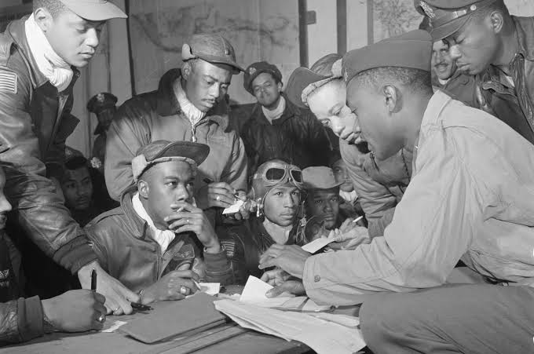
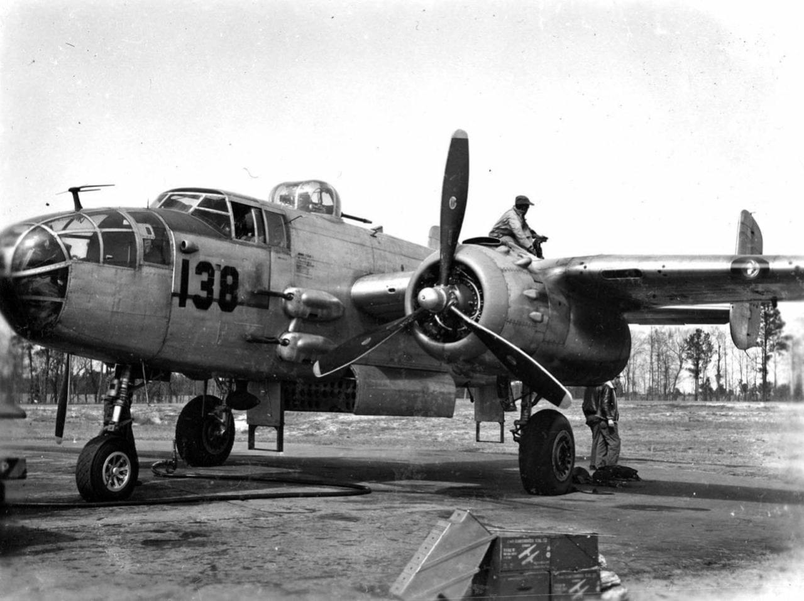

The Tuskegee Airmen: Aviation Training, Combat Service, and Military Integration
Trained at Tuskegee Army Air Field in Alabama during World War II, the Tuskegee Airmen were the first African American military aviators and aviation support personnel in the United States Armed Forces, earning a distinguished combat record in North Africa and Europe.
Origins and Training at Tuskegee

Prior to World War II, racial segregation and institutional barriers excluded African Americans from serving as pilots in the United States military, despite sustained advocacy from civil rights organizations, the Black press, and aviation pioneers.
In 1941, following public pressure and legislative action, the War Department established a segregated flight training program centered at Moton Field and Tuskegee Army Air Field in Alabama.
Cadets underwent rigorous primary, basic, and advanced flight instruction alongside ground school training in navigation, meteorology, engineering, and aircraft maintenance.
Equally essential to the program's success were the mechanics, armorers, weather forecasters, radio operators, medical staff, and instructors who kept aircraft flight-ready under demanding operational standards.
Combat Operations in North Africa and Europe

The 99th Fighter Squadron deployed to North Africa in spring 1943, flying tactical ground-support, patrol, and air-defense missions over Tunisia, Sicily, and southern Italy.
In 1944, the newly formed 332nd Fighter Group arrived in Italy and joined the Fifteenth Air Force, transitioning from coastal patrol duties to long-range bomber escort missions deep into central and southern Europe.
Flying Republic P-47 Thunderbolts and later North American P-51 Mustangs distinguished by their red-painted tails, pilots of the 332nd escorted heavy bombers targeting industrial centers, rail yards, and airfields.
Disciplined escort tactics—staying closely with bomber formations rather than chasing individual aerial victories—helped protect Allied bomber crews against intercepting enemy fighters and anti-aircraft threats.
Recognition and Postwar Military Integration

Over the course of the war, Tuskegee Airmen flew more than 1,500 combat missions, destroyed hundreds of enemy aircraft in the air and on the ground, and earned Distinguished Unit Citations, Distinguished Flying Crosses, and Air Medals.
Meanwhile, the 477th Bombardment Group trained on twin-engine medium bombers in the United States, where airmen challenged segregated base facilities in nonviolent protests such as the Freeman Field incident in 1945.
The operational record and professionalism of the Tuskegee Airmen refuted discriminatory assumptions about African American military capabilities and provided powerful evidence for military reform.
In July 1948, President Harry S. Truman issued Executive Order 9981, mandating equality of treatment and opportunity in the United States Armed Forces and accelerating the desegregation of the military.
Before the Tuskegee program began, African American leaders, educators, and journalists pressed persistently for equal opportunity in military aviation. They argued that excluding Black citizens from pilot training contradicted democratic principles and wasted valuable talent as global conflict widened.
Establishing flight training at Tuskegee required building facilities, assembling instructors, and selecting candidates under intense scrutiny. Cadets faced demanding academic coursework alongside flight hours where mistakes meant washing out of the program.
Success in the air depended heavily on skilled ground crews working on the flight line. Mechanics, sheet-metal workers, engine specialists, and armorers inspected aircraft, repaired battle damage, and prepared planes for early-morning missions in all weather.
Deployment to North Africa tested the 99th Fighter Squadron against seasoned Axis pilots, rough airfields, and shifting front lines. Airmen flew coastal patrols, ground-attack sorties, and air-cover missions supporting Allied ground advances across Italy.
When the 332nd Fighter Group entered long-range bomber escort operations in 1944, pilots flew hundreds of miles into contested airspace. Protecting heavy bombers required steady discipline, clear radio coordination, and close formation flying.
Distinctive red-painted tail markings helped Allied crews spot friendly fighters during complex multi-group raids. Over time, those red tails became recognizable symbols of reliability and determination across the Mediterranean and southern Europe.
Away from the front lines, service members at bases in the United States also confronted everyday segregation on posts and in surrounding towns. Many airmen responded with quiet resolve, legal persistence, and collective solidarity.
The combat record of the Tuskegee Airmen provided concrete evidence against long-standing claims that Black personnel could not handle complex technical or combat roles. Their performance strengthened arguments for full equality across the armed services.
After World War II, debates over civil rights and defense policy continued to shape American institutions. Executive Order 9981 in 1948 established a clear federal policy of equal treatment and opportunity throughout the military.
Today the legacy of the Tuskegee Airmen is remembered through historical preservation, education, and public honors that recognize both their wartime service and their lasting impact on American society.
Training at Tuskegee demanded technical precision in navigation, gunnery, formation flying, and emergency procedures. Every graduate carried high expectations while representing a community watching closely from home.
In combat theaters across the Mediterranean and southern Europe, pilots faced long flights, unpredictable weather, and coordinated enemy defenses. Maintaining discipline during escort missions required trust between flight leaders, wingmen, and bomber crews.
Ground support personnel worked long hours under harsh conditions to keep fighters and bombers ready for consecutive sorties. Their skill in maintenance, supply, and communications was essential to sustained operations.
After the war, veterans of the Tuskegee program pursued careers in aviation, public service, education, and civil rights, leaving an enduring mark on American history.
From primary flight training in Alabama to long-range escort missions over central Europe, the Tuskegee Airmen demonstrated sustained professionalism, tactical discipline, and technical mastery under combat conditions.
Their achievements helped reshape public policy and accelerated the integration of the United States Armed Forces in the years following World War II.
Pilots, navigators, ground crews, and support personnel worked together under demanding wartime conditions, leaving a lasting record of service and achievement across Allied air operations.
Through disciplined training, combat service across North Africa and Europe, and steadfast determination at home, the Tuskegee Airmen earned lasting recognition in military and civil rights history.
From flight training in Alabama to escort sorties across southern and central Europe, airmen and ground crews maintained high standards under demanding wartime conditions.
Their service strengthened calls for equal opportunity and helped advance military desegregation.
Through rigorous preparation, combat operations over North Africa and Europe, and steady resolve in the face of segregation, the Tuskegee Airmen established an enduring legacy in American military history.
Across training fields, maintenance hangars, and combat skies, the Tuskegee Airmen demonstrated discipline and skill under pressure, leaving a record that helped advance equality across the armed forces.
Through skill, teamwork, and persistence in combat and at home, the Tuskegee Airmen left a lasting legacy across aviation and civil rights history.
Dedicated flight crews and ground specialists carried out demanding assignments across multiple theaters, building a record of service that strengthened calls for equal treatment and helped accelerate full integration across the armed forces in the years that followed the war.
Their service and sacrifice left a lasting mark on aviation and civil rights